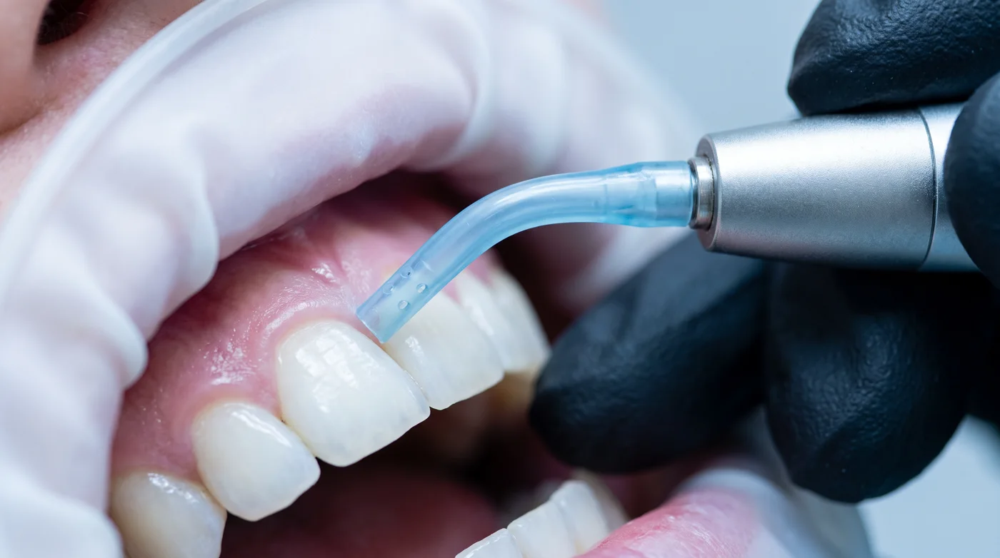

Материал для специалистов
Статья предполагает знание пародонтологической терминологии. Приведённые ориентиры не заменяют инструкцию к вашей системе и протоколы клиники.
Какую задачу решает метод
Поддесневая воздушно-абразивная обработка работает с биоплёнкой: разрушает и вымывает её из пародонтального кармана, включая зоны, недоступные для кюреты и насадки скалера — фуркации, вогнутости корня, борозды.
Чего метод не делает: не удаляет минерализованные поддесневые отложения. Плотный камень остаётся задачей ультразвука и ручных инструментов. Попытка «заменить SRP порошком» — методологическая ошибка, приводящая к недообработанному корню при внешне чистой картине.
| Механическая обработка (SRP) | Поддесневая порошковая | |
|---|---|---|
| Мишень | Минерализованные отложения, изменённый цемент | Биоплёнка |
| Доступ в фуркации | Ограничен | Хороший |
| Воздействие на цемент корня | Снимает слой | Минимальное |
| Ощущения пациента | Часто требует анестезии | Мягче |
| Время на карман | Значительное | Порядка 5 секунд |
| Роль в протоколе | Основная обработка | Поддерживающая терапия, дополнение |
Показания
- Поддерживающая пародонтальная терапия — основное показание. Пациент прошёл активную фазу, задача — контролировать биоплёнку на повторных визитах.
- Карманы средней глубины, где механическая обработка уже выполнена, но требуется регулярная деконтаминация.
- Фуркации и анатомически сложные зоны, куда кюрета заходит плохо.
- Периимплантный мукозит — подробнее в статье о гигиене вокруг имплантов.
- Пациенты с выраженной чувствительностью, у которых повторный SRP переносится тяжело.
Требования к материалу
Здесь нет свободы выбора — требования жёсткие и обусловлены свойствами тканей в кармане.
Цемент корня и дентин существенно мягче эмали. Всё, что допустимо на наддесневой эмали, в кармане может оказаться избыточным. Поэтому:
- Основа — эритритол или глицин. Бикарбонат натрия поддесневой не применяется.
- Фракция — мелкодисперсная, порядка 14 мкм.
- Форма частицы — округлая. Угловатый кристалл в замкнутом пространстве кармана работает принципиально иначе, чем на открытой поверхности.
- Сыпучесть и влагостойкость — комкующийся порошок даёт рывковую подачу, а рывок в кармане — это скачок давления.
Развёрнутое сравнение основ — в статье об абразивности порошков.
Насадка — не деталь, а условие
Поддесневая обработка выполняется специальной субгингивальной насадкой: гибкой, атравматичной, с боковой подачей и рассеиванием потока. Стандартной наддесневой насадкой в карман не работают — именно такое сочетание чаще всего заканчивается эмфиземой.
Протокол по шагам
- Оценка. Зондирование, карта карманов, фиксация исходных значений. Без этого невозможно оценить динамику на следующем визите.
- Анамнез и противопоказания. Заболевания дыхательных путей, острые воспалительные процессы, состояния, при которых аэрозоль нежелателен.
- Преполоскание антисептиком.
- Наддесневой этап. Снятие биоплёнки и пигмента с открытых поверхностей — иначе она будет заноситься в карман.
- Смена насадки на субгингивальную.
- Обработка кармана. Насадка вводится до дна без усилия, движение по окружности, ориентир — около 5 секунд на карман, минимально достаточное давление.
- Контроль состояния тканей по ходу: побледнение, отёк, крепитация — немедленная остановка.
- Ультразвук точечно по остаточным минерализованным отложениям, если они выявлены.
- Финиш. Промывание, оценка, рекомендации по домашнему уходу, назначение интервала.
Границы метода
Честный список того, где порошковая обработка не подходит или недостаточна:

- Плотный поддесневой камень — нужна механическая обработка.
- Активная фаза лечения пародонтита — метод относится к поддерживающему этапу, а не заменяет первичную терапию.
- Глубокие карманы со сложной анатомией, где не обеспечивается контролируемое введение насадки.
- Острое воспаление с выраженной экссудацией — сначала купирование.
- Противопоказания со стороны общего состояния — тяжёлые заболевания дыхательной системы и другие ограничения к аэрозольобразующим процедурам.
Осложнения и их профилактика
Подкожная эмфизема — редкое, но самое серьёзное осложнение метода. Воздух под давлением проникает в мягкие ткани через повреждённый или широко раскрытый десневой край. Проявляется быстро нарастающим отёком и характерной крепитацией при пальпации.
Профилактика складывается из четырёх пунктов:
- Только субгингивальная насадка с рассеивающей подачей.
- Минимально достаточное давление — не «на всякий случай побольше».
- Ограниченное время в одной точке и непрерывное движение.
- Отказ от обработки при повреждённом десневом крае и признаках острого воспаления.
При подозрении на эмфизему обработка прекращается немедленно, пациент наблюдается, тактика определяется врачом.
Что говорить пациенту заранее
Кратковременная чувствительность и лёгкая кровоточивость в первые сутки после обработки карманов ожидаемы. Предупреждение до процедуры снимает большую часть последующих звонков.
Коротко
- Метод работает с биоплёнкой и не заменяет механическую обработку корня.
- Основное показание — поддерживающая пародонтальная терапия.
- Только мелкая фракция на основе эритритола или глицина и только субгингивальная насадка.
- Ориентир — около 5 секунд на карман при непрерывном движении.
- Эмфизема — реальный риск, полностью управляемый техникой.
Материал носит информационный характер и не заменяет клинические протоколы вашей организации и инструкцию производителя оборудования. Имеются противопоказания, необходима консультация специалиста.